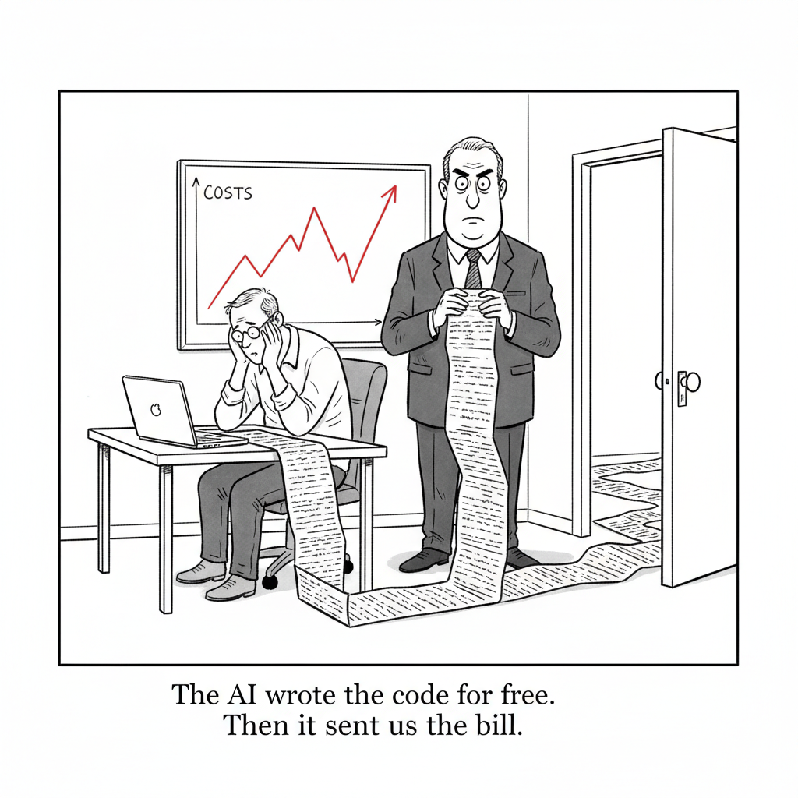

Your daily AI news digest
AI the News That's Fit to Prompt
Google Will Pay SpaceX $920M a Month for Compute
SpaceX has agreed to supply Google with compute capacity for roughly $920 million per month, a deal that runs from October 2026 through June 2029 and routes on the order of 110,000 NVIDIA GPUs to Google's AI workloads. The arrangement is striking on its own terms, but it is the direction of the money that matters: a rocket company is now a compute landlord, and one of the world's largest cloud providers is the tenant. The AI build-out has grown large enough that even hyperscalers are renting capacity from outside their own data centers.
The number also reframes how to read every other AI cost story in circulation this week. A near-billion-dollar monthly compute bill is the supply-side mirror of the metered invoices landing on developers and enterprises. When the people who own the GPUs sign contracts this size, the pressure flows downstream as usage caps, token billing, and a sudden industry-wide interest in what inference actually costs.


"The AI wrote the code for free. Then it sent us the bill."
The Token Bill Comes Due as the Industry Scrambles
Across the industry, AI token consumption is climbing faster than per-token prices are falling, and the resulting bills are forcing a reckoning. The Linux Foundation has launched a Tokenomics Foundation to set standards for tracking and managing AI spend, echoing how FinOps once tamed runaway cloud costs. The story is the connective tissue of the week: the same cost pressure shows up as usage caps at Uber, token billing at GitHub Copilot, and nine-figure compute contracts up the stack.

Ahead of Its IPO, Anthropic Shrugs Off Doubts on AI's Returns
With a public listing now in view after a $65 billion raise at a $965 billion valuation, co-founder Daniela Amodei waves off the skeptics questioning whether AI's returns justify the spending. Her framing is that the capital intensity is the point: training and deploying frontier models simply requires this much money, and the IPO is how you fund it at scale. It is the clearest signal yet that Anthropic intends to test public markets on the bet.

Anthropic Expands Project Glasswing to 150 New Partners
Anthropic is widening Project Glasswing, its cybersecurity initiative built on a Claude Mythos Preview model, to roughly 150 new partner organizations across more than 15 countries. The goal is to help defenders secure critical infrastructure and software at a moment when attackers are increasingly AI-assisted. The expansion pairs naturally with the company's own research on how threat actors are folding AI into post-compromise operations.
Making Claude a Chemist: Reading NMR Spectra
Anthropic shows how Claude performs on NMR spectrum analysis, a foundational task in chemistry, predicting chemical shifts and proposing molecular structures from spectral data. It is a concrete example of frontier models moving past text and code into the specialized reasoning of a scientific discipline. The work is early, but it sketches a path toward AI as a working lab collaborator rather than a general assistant.
Unscramble each word from today's news. The red letters spell the bonus word.
Mapping a Year of AI-Enabled Cyber Threats
Anthropic's Frontier Red Team analyzed 832 accounts banned for malicious cyber activity and found threat actors increasingly leaning on AI in the post-compromise stages of attacks. The finding weakens traditional risk-assessment frameworks that assume the hard part is initial access. As AI lowers the cost of the later stages, defenders have to rethink where in the kill chain the leverage actually sits.
S&P 500 Won't Waive Profit Rule for Unprofitable AI Firms
The S&P 500 has declined to fast-track SpaceX's entry, holding firm on its profitability requirement and keeping richly valued but unprofitable AI-era firms out of the index. The decision is a quiet counterweight to the private-market exuberance: public benchmarks still want to see earnings, not just valuations. It also sets the bar Anthropic and its peers will have to clear as they eye public listings.
Gemma 4 Gets Quantization-Aware Training Checkpoints
Google released Quantization-Aware Training checkpoints for Gemma 4 that sharply cut memory requirements while preserving model quality, making the models practical on phones, laptops, and consumer GPUs. It is part of the steady push to run capable models on local hardware, and a direct hedge against exactly the inference-cost pressure dominating the rest of the week's news.
Did Claude Increase Bugs in rsync? A Data Check
A statistical look at whether Claude-assisted development introduced more bugs into rsync, measuring severity-weighted bugs per ten commits across 36 releases. The conclusion: no statistical evidence that the Claude-assisted releases were unusually buggy. It is a useful, numbers-first rebuttal to the anecdote-driven panic about AI-written code degrading mature open-source projects.
Anthropic Adds a Services Track and Partner Hub
Anthropic introduced two additions to its Claude Partner Network: a tiered Services Track that measures partner capability, and a Partner Hub directory that connects customers with qualified service providers. The moves are unglamorous but telling, the scaffolding of an enterprise ecosystem rather than a product launch. It is how a model company turns into a platform.
OpenAI Ships a 'Lockdown Mode' Against Prompt Injection
Simon Willison covers OpenAI's new Lockdown Mode, a security setting that restricts the outbound network requests an assistant can make so that a successful prompt injection has nowhere to send stolen data. It is an admission that exfiltration, not just bad output, is the real risk once you connect a model to your tools.
Uber Caps Employee Spend on Tools Like Claude Code
Uber has imposed a $1,500 monthly per-tool cap on AI coding assistants after burning through its 2026 budget in four months. The policy, covering tools like Claude Code and Cursor, is the most concrete sign yet that even well-funded engineering orgs are now rationing AI usage by the dollar.
Microsoft Unveils MAI-Thinking-1 and MAI-Code-1-Flash
Microsoft announced two new in-house text models, MAI-Thinking-1 and MAI-Code-1-Flash, as it continues building model capacity independent of its OpenAI partnership. Willison walks through the details and corrects his own initial read on the model sizes and training-data licensing.